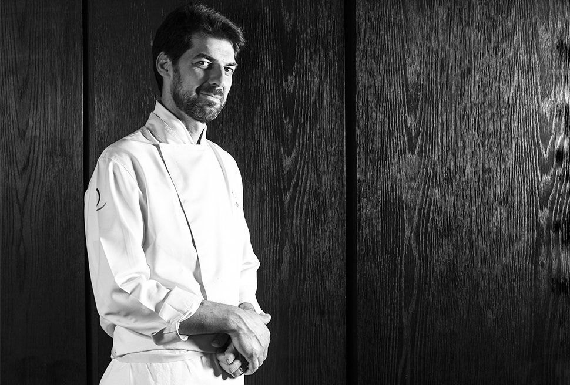

Massimo Bottura
Es un chef italiano. Es conocido por ser el chef propietario de Osteria Francescana, un restaurante de tres estrellas Michelin, ubicado en Módena, Italia.

Massimiliano Alajmo
Es un chef italiano. En 2002, a los 28 años, se convirtió en el chef más joven de la historia en recibir tres estrellas de la Guía Michelin.

Gianfranco Chiarini
Es un chef, músico, empresario y presentador italiano. Celebridad culinaria de la televisión Europea, poseedor de estrellas Michelin en el mundo de alta gastronomía. El estilo culinario de Chiarini es la Alta cocina de Fusión Italiana.